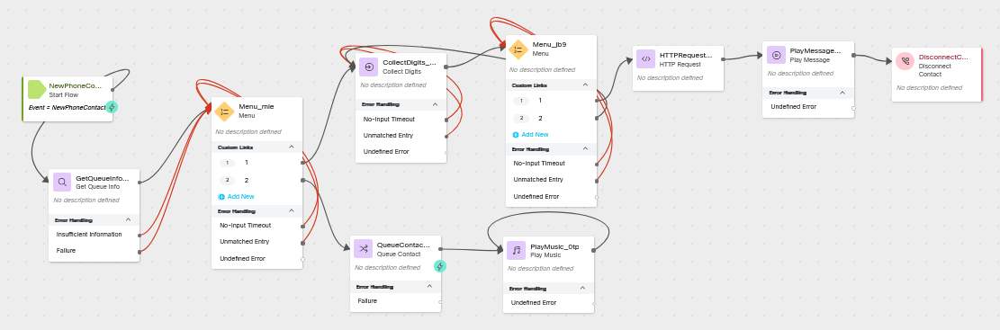
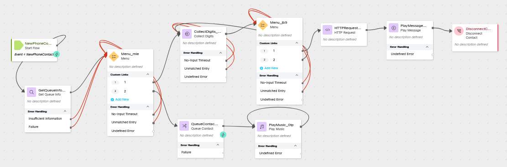
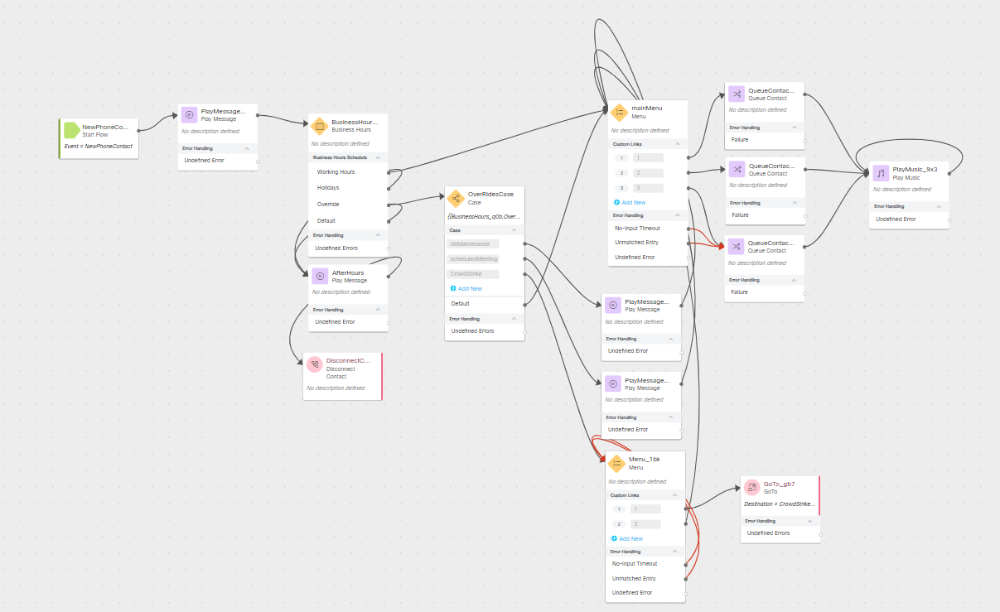
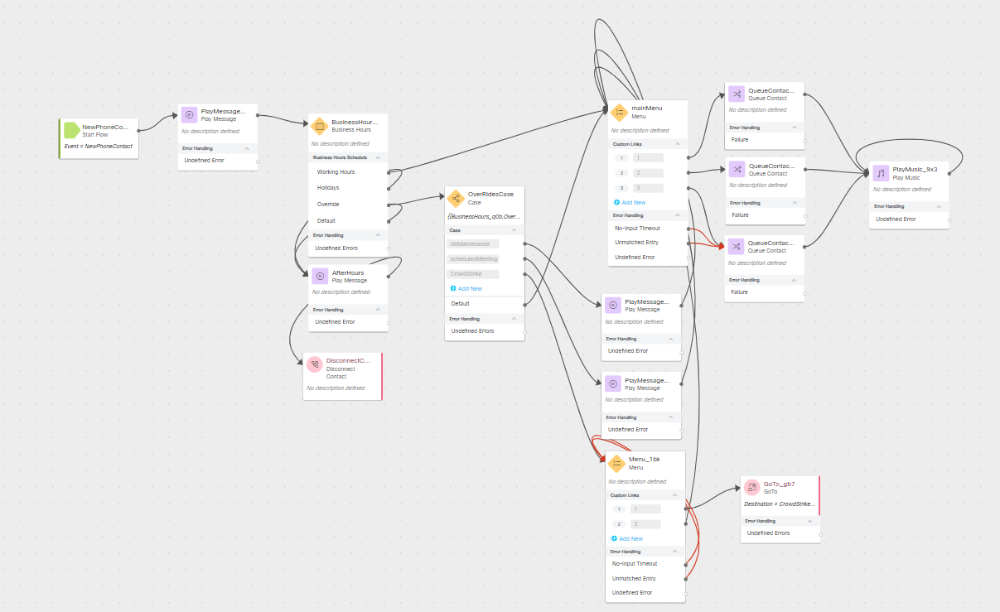

Creating a Self Service Support Option in an Emergency
Story
It is July 19, 2024 and your IT department is starting their day off with a full call queue of users which are all reporting the same issue as 8.5 million other PC users, their PCs are crashing or will not boot. Worst of all your IT team cannot remotely access they affected user's PC and must walk them through the remediation steps over the phone. As fortune would have it, the required steps for remediation were quickly spreading across the internet. Now you just need to walk your users through the remediation process so they can get back to work.
High Level Explanation
- A Business Hours Override has already been configured and is currently being used to let callers know that there is a widespread event causing a higher than normal call volume.
- Another team member has created a webhook flow in Connect to send an SMS message with instructions for resolving the issue and collect feedback from the customer regarding resolution status.
- Create a new flow to handle the logic for the emergency event
- Inform callers that they will need to take actions on their PC to resolve the issue.
- Give callers the option to receive an SMS with a link to instructions or enter the queue as the X caller in queue.
- If they choose to receive the SMS, collect their SMS number and use a webhook to send them an SMS message.
- If they choose to wait in the queue, queue the call.
- After unit testing the new flow, edit the main flow changing the Play Message option into a Menu and a go to flow node
Preconfigured elements
- Existing main flow for the IT department
- Business Hours
- Business Hours Overrides
- Webhook for sending SMS
Build
Create a new Flow
Create a flow named
yourLabID _CrowdStrikeHelp
Add a Get Queue Info node
Connect the New Phone Contact to this Get Queue Info node
Select: Static Queue
Queue:
Lookback Time
EWT Lookback:
5 Minutes
Add a Menu node
Connect the output, Insufficient Information, and Failure node edges this Menu node
Enable Text-To-Speech
Select the Connector: Cisco Cloud Text-to-Speech
Click the Add Text-to-Speech Message button
Delete the Selection for Audio File
Text-to-Speech Message:
In order to resolve this issue, you will need to follow several steps on your PC as a technician will not be able to remotely connect to your machine. Resolving this issue should only take a few minutes. To receive a link to a video walk through via text message which will help you resolve this immediately, press 1. To enter the queue as the {{GetQueueInfo_NODEID.CallsQueuedNow + 1}} call in the queue press 2. In the Text-to-Speech Message replace GetQueueInfo_NODEID.CallsQueuedNow with the correct Get Queue Info output variable for Calls Queued Now.
Select: Make Prompt Interruptible
In Custom Menu Links:
Use the Add New button and the Digit Number selector to provide Options 1 and 2
Connect the No-Input Timeout and Unmatched Entry node edges and connect them to the front of this Menu node
Add a Collect Digits node
Connect the 1 output node edge from the Menu node to this Collect Digits node
Enable Text-To-Speech
Select the Connector: Cisco Cloud Text-to-Speech
Click the Add Text-to-Speech Message button
Delete the Selection for Audio File
Text-to-Speech Message:
Please enter your 10 digit mobile phone number starting with the area code. Select: Make Prompt Interruptible
In Advanced Settings
Minimum Digits:
10 Maximum Digits:
10 Connect the No-Input Timeout and Unmatched Entry node edges and connect them to the front of this Collect Digits node
Add a Menu Node
Connect the output node edge from the Collect Digits node to this Menu node
Enable Text-To-Speech
Select the Connector: Cisco Cloud Text-to-Speech
Click the Add Text-to-Speech Message button
Delete the Selection for Audio File
Text-to-Speech Message:
<speak>You have entered <say-as interpret-as='telephone'>{{CollectDigits_NODEID.DigitsEntered}}</say-as>. To receive an SMS message at this number, press 1. To enter a different number, press 2. </speak>In the Text-to-Speech Message replace CollectDigits_NODEID.DigitsEntered with the correct Collect Digits output variable for Digits Entered.
Select: Make Prompt Interruptible
In Custom Menu Links:
Use the Add New button and the Digit Number selector to provide Options 1 and 2
Connect the No-Input Timeout and Unmatched Entry node edges and connect them to the front of this Menu node
Connect the 2 node edge output to the Collect Digits Node
Add an HTTP Request node
Connect the 1 output node edge from the last Menu node to this HTTP Request node
Turn off Use Authenticated Endpoint
Request URL:
https://hooks.us.webexconnect.io/events/IB8ZVWPJUL Method: POST
Content Type: Application/JSON
Request Body:
{ "ANI": "{{NewPhoneContact.ANI}}", "sms": "+1{{CollectDigits_NODEID.DigitsEntered}}", "taskID": "{{NewPhoneContact.interactionId}}" }In the request body, replace CollectDigits_NODEID.DigitsEntered with the correct Collect Digits output variable for Digits Entered.
Add A Play Message node
Connect the output node edge from the HTTP Request node to this Play Message node
Enable Text-To-Speech
Select the Connector: Cisco Cloud Text-to-Speech
Click the Add Text-to-Speech Message button
Delete the Selection for Audio File
Text-to-Speech Message:
You should receive a text message with a link to instructions for resolving the issue within a few minutes. Goodbye. Connect the output node edge from this node to the Disconnect Contact node added in the next step.
Add a Disconnect Contact node
Add a Queue Contact node
Connect the 2 output node edge from the first menu node to this Queue Contact node.
Select Static Queue
Queue:
yourQueueID
Add a Play Music node
Connect the output from the Queue Contact node to this Play Music node
Select Static Audio File
Music File: defaultmusic_on_hold_cisco_opus_no_1.wav
Connect the output node edge to the front of this Play Music Node
Check your flow

Check your flow
{kind=link}
Publish your flow
Turn on Validation at the bottom right corner of the flow builder
If there are no Flow Errors, Click Publish
Add a publish note
Add Version Label(s): Live
Click Publish Flow
Map your flow to your inbound channel
Navigate to Control Hub > Contact Center > Channels
Locate your Inbound Channel (you can use the search):
Select the Routing Flow:
_CrowdStrikeHelp Select the Version Label: Live
Click Save in the lower right corner of the screen
Unit Test the Flow
- Using Webex, place a call to your Inbound Channel number
- You should here the TTS message explaining the issue, giving you the option to press 1 to receive a link to instructions via SMS or to enter the queue as the 1 call in queue press 2.
- Press 2
- you should here the music in queue.
- Hang up
- Using Webex, place a call to your Inbound Channel number
- You should here the TTS message explaining the issue, giving you the option to press 1 to receive a link to instructions via SMS or to enter the queue as the 1 call in queue press 2.
- Press 1
- Enter your 10 digit US based mobile number
- You should here the message "You have entered", number you entered read back to you, and the option to receive and SMS message at that number or to enter in another number.
- Press 2
- Enter in a different number
- You should here the message "You have entered", number you entered read back to you, and the option to receive and SMS message at that number or to enter in another number.
- Press 2
- Enter in your original SMS number
- You should here the message "You have entered", number you entered read back to you, and the option to receive and SMS message at that number or to enter in another number.
- Press 1
- You will hear the message "You should receive a text message with a link to instructions for resolving the issue within a few minutes. Goodbye."
- The call will be disconnected
- Press 2
- You will Receive an SMS message with a link to a youtube video and instructions to reply either "Resolved" or "Help"
- Reply Resolved
Edit the CrowdStrike_Starter Flow
In Control Hub > Contact Center > Flows
Open the flow:
_CrowdStrikeStarter Switch on the Edit toggle in the header section of the flow builder
Replace the Play Message node which we put in once we identified the event with a Menu node
Delete the Play Message node which is connected to the CrowdStrike node edge of the
Add a Menu node
Connect the output node edge from the Collect Digits node to this Menu node
Enable Text-To-Speech
Select the Connector: Cisco Cloud Text-to-Speech
Click the Add Text-to-Speech Message button
Delete the Selection for Audio File
Text-to-Speech Message:
There is a widespread Issue with Microsoft Windows not being able to boot and giving a bluescreen. If you are facing this issue, please press 1. If you are calling regarding a different issue, press 2.Select: Make Prompt Interruptible
In Custom Menu Links:
Use the Add New button and the Digit Number selector to provide Options 1 and 2
Connect the No-Input Timeout and Unmatched Entry node edges and connect them to the front of this Menu node
Connect the 2 node edge output to the main Menu node
Add a Go To node
Connect the 1 node edge from the new Menu node you created in the previous step to this Go To node
Destination Type: Flow
Select Static Flow
Flow:
_CrowdStrikeHelp Choose Version Label: Latest
Check your flow

Check your flow
{kind=link}
Publish the Flow Using the Test Tag
Turn on Validation at the bottom right corner of the flow builder
If there are no Flow Errors, Click Publish
Add a publish note
Add Version Label(s): Test
Click Publish Flow
Map your flow to your inbound channel
Navigate to Control Hub > Contact Center > Channels
Locate your Inbound Channel (you can use the search):
Select the Routing Flow:
_CrowdStrikeStarter Select the Version Label: Live
Click Save in the lower right corner of the screen
Make a test call to your inbound channel number
From Webex call your mapped inbound channel number:
Note
You will not hear the changes you have made to the flow as you published a different version of the flow using the version label.
This is to show that you can make changes to a flow without affecting the live/active version of the running flow.
In the next step we will map the "Test" version of the flow you just published.
Pretend that the next mapping activity would be completed on a number you are using for testing before committing your changes to the live flow.
Map your flow to your inbound channel
Navigate to Control Hub > Contact Center > Channels
Locate your Inbound Channel (you can use the search):
Select the Routing Flow:
_CrowdStrikeStarter Select the Version Label: Test
Click Save in the lower right corner of the screen
Dev Testing
-
Using Webex, place a call to your Inbound Channel number
- After hearing the Menu prompt to press 1 if you are experiencing the blue screen issue or 2 if you are calling about a different issue, press 2.
- You should hear the normal main menu prompt
- Hang up
-
Using Webex, place a call to your Inbound Channel number
- After hearing the Menu prompt to press 1 if you are experiencing the blue screen issue or 2 if you are calling about a different issue.
- Enter no selection
- You should hear the previous menu prompt again.
- Press 2.
- You should hear the first Menu prompt from the
_CrowdStrikeHelp - Hang up or you can test one of the paths again.
Publish the flow with the Live Tag
Turn on Validation at the bottom right corner of the flow builder
If there are no Flow Errors, Click Publish
Add a publish note
Add Version Label(s): Live
Click Publish Flow
Map your flow to your inbound channel
Navigate to Control Hub > Contact Center > Channels
Locate your Inbound Channel (you can use the search):
Select the Routing Flow:
_CrowdStrikeStarter Select the Version Label: Live
Click Save in the lower right corner of the screen
Note
Pretend that this mapping activity would be completed on the main number for the production IT flow.
Smoke Test
-
Using Webex, place a call to your Inbound Channel number
- After hearing the Menu prompt to press 1 if you are experiencing the blue screen issue or 2 if you are calling about a different issue, press 2.
- You should hear the normal main menu prompt
- Hang up
-
Using Webex, place a call to your Inbound Channel number
- After hearing the Menu prompt to press 1 if you are experiencing the blue screen issue or 2 if you are calling about a different issue.
- Enter no selection
- You should hear the previous menu prompt again.
- Press 2.
- You should hear the first Menu prompt from the
_CrowdStrikeHelp - Hang up or you can test one of the paths again.
- Answer the following questions:
- Why did we run the same tests as we did for the Dev Testing?
- How could we change the flow behavior after the CrowdStrike event has ended? (There are several answers.)
- How would you improve this flow?